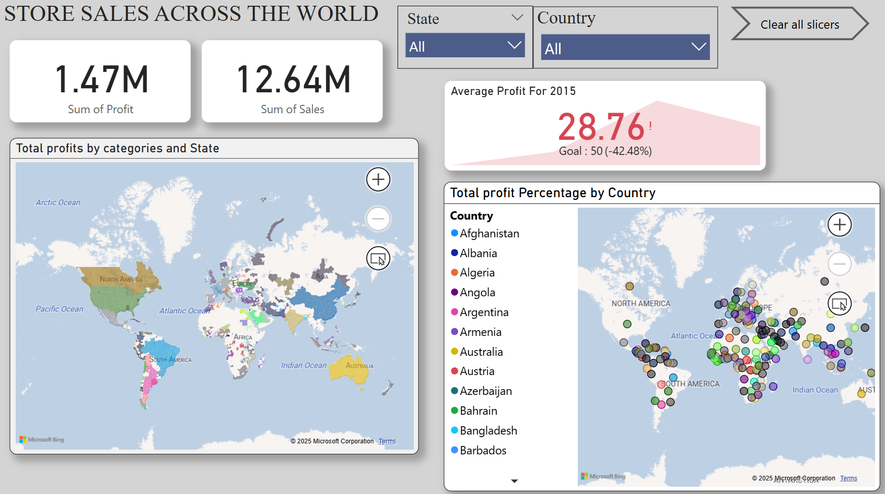
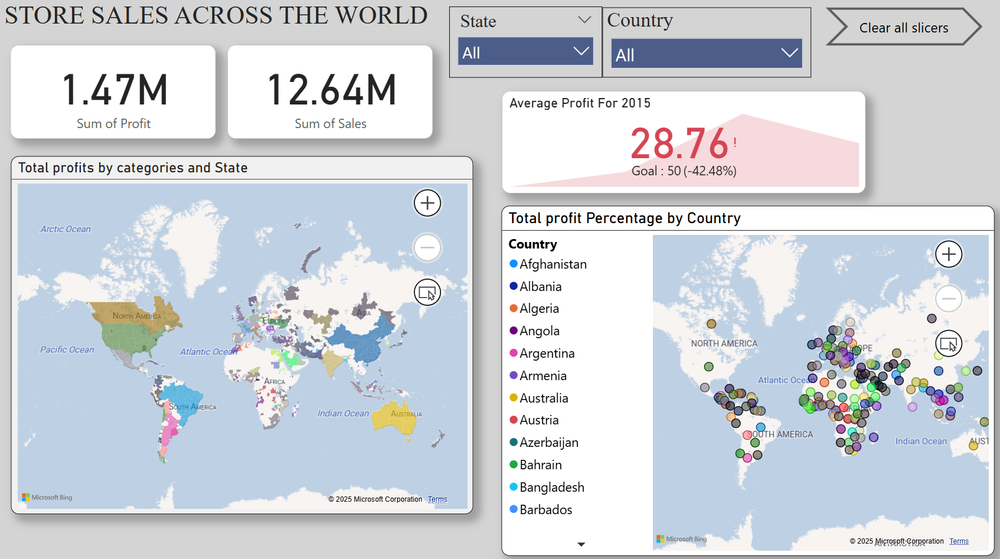
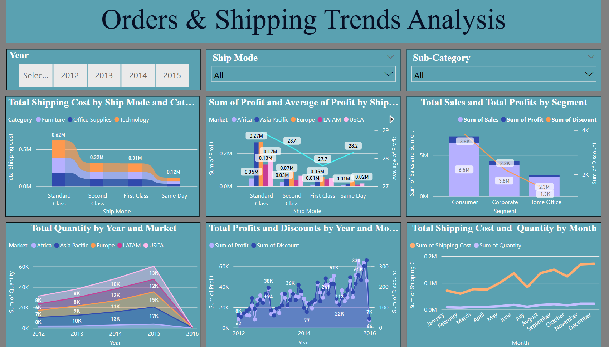
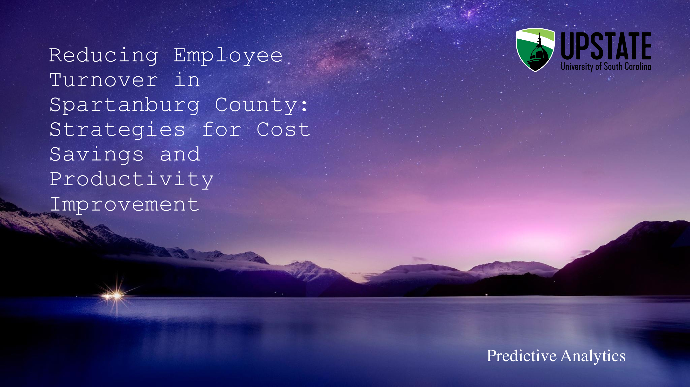
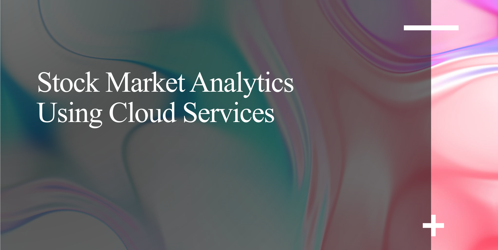

Created a dashboard which provides a comprehensive view of store sales across different regions worldwide, with an added focus on the Average Profit Target for each region. It includes key performance indicators (KPIs) such as total profits, and sales. Users can explore insights through interactive visualizations, filtering data by country, and state. The dashboard helps in identifying high-performing locations, seasonal trends, and market opportunities to drive strategic decision-making.

This dashboard provides a comprehensive analysis of product orders and shipping modes. It helps track order volumes, shipping trends, and delivery performance across different modes such as Standard, Express, and Same-Day delivery

I have conducted a small research project on employee turnover data, analyzing trends and factors impacting workforce stability. The study focused on identifying patterns in turnover rates, employee engagement, and the role of workplace well-being. Using data analysis techniques, we extracted insights to help organizations reduce turnover, improve employee satisfaction, and enhance productivity.
I have conducted a small research project on Spotify data, analyzing streaming trends and user behavior. The study focused on identifying patterns in song popularity, listener preferences, and factors influencing engagement. By applying data mining techniques, I extracted insights that could help optimize music recommendations and understand market trends in the streaming industry.
I have conducted a small research project on Toxic Release Inventory (TRI) data, analyzing its relationship with the Air Quality Index (AQI). The study focused on identifying patterns in toxic chemical releases, their impact on air quality, and key environmental factors. By applying data analysis techniques, we extracted insights to better understand pollution trends.

Leveraging Azure Cloud Services and Machine Learning to predict stock market trends and automate trading. Building real-time dashboards with Power BI for investment firms and enhancing decision-making through AI-driven insights. #Azure #MachineLearning #StockMarketAnalytics.